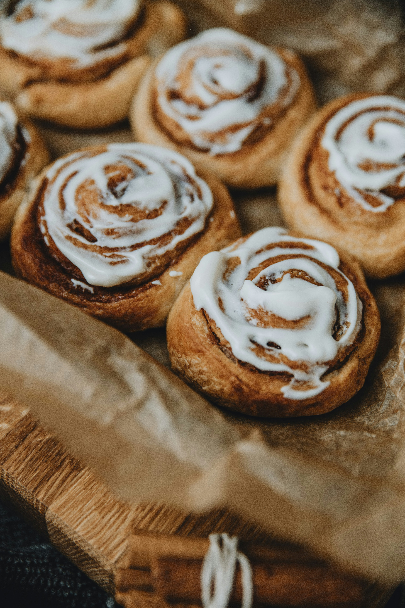
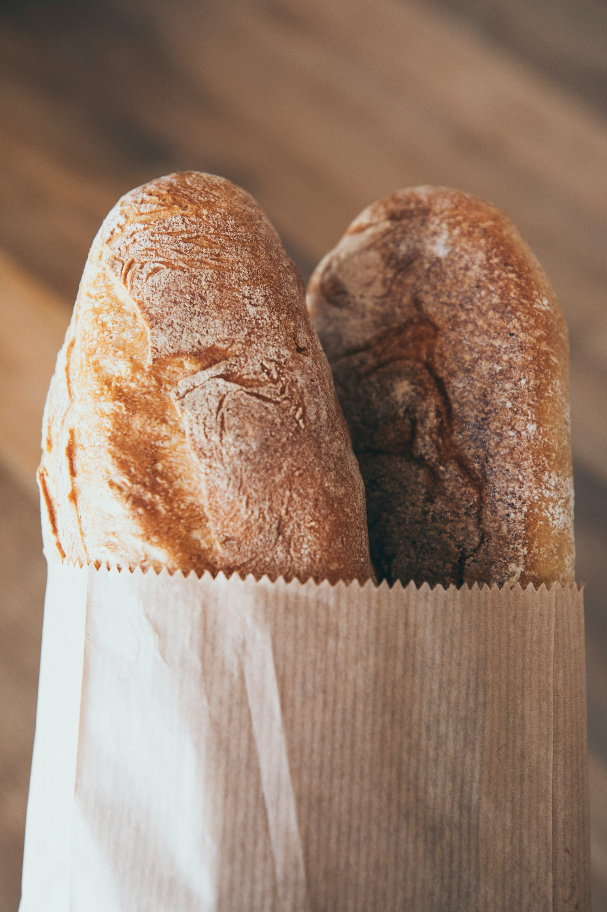
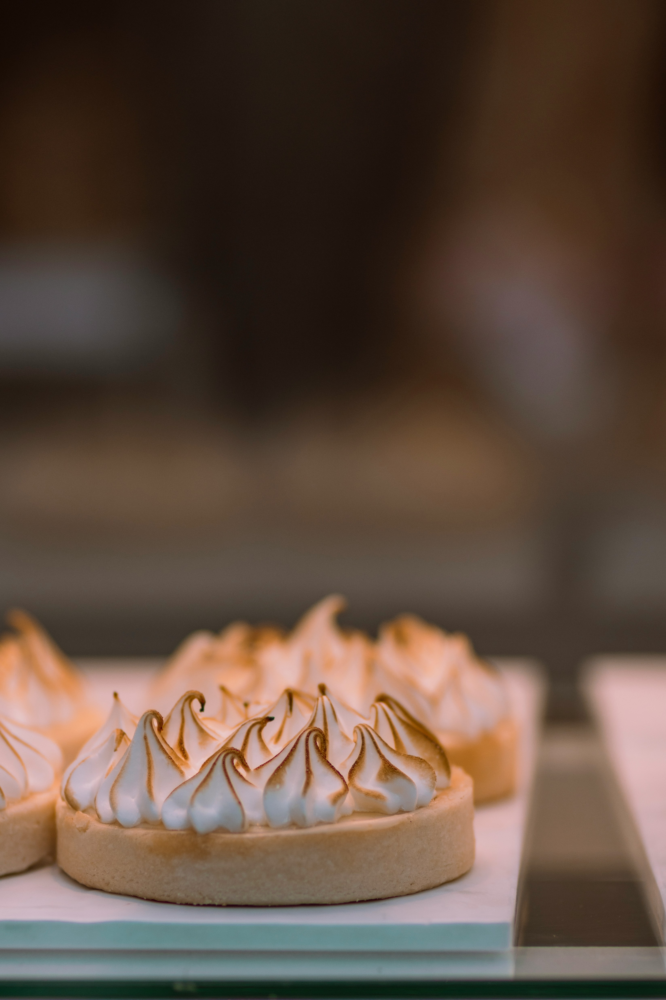

Welcome to Maple Street Bakery & Cafe
Step inside, take a deep breath, and make yourself at home. Founded on a love for simple ingredients and time-honored baking traditions, our neighborhood bakery is a gathering place built around the comfort of fresh-baked goods. Whether you’re stopping in for your morning espresso, a warm pastry, or a loaf of bread straight from the oven, we’re honored to be a part of your daily routine.

Try Our Award Winning Sourdough
Every great loaf begins with patience, passion, and a little bit of magic. Baked daily using our wild starter and locally sourced flour, our signature sourdough undergoes a slow, natural fermentation process. This traditional method gives each loaf its distinctive crackly, deep-golden crust, airy interior, and complex, rich flavor profile. It’s this dedication to the slow-food process that earned us top honors at the Regional Bread Guild Awards. But while accolades are wonderful, our favorite award will always be seeing a hot, freshly sliced loaf on your family’s dinner table.

Catering requests
Bringing people together is what we do best. From cozy family gatherings and morning office meetings to weekend celebrations, let us supply the pastries, savory bakes, and artisan breads for your next event. Planning an gathering? Explore our catering menu and submit a request below, or speak with our team directly—we’d love to help make your event unforgettable.
